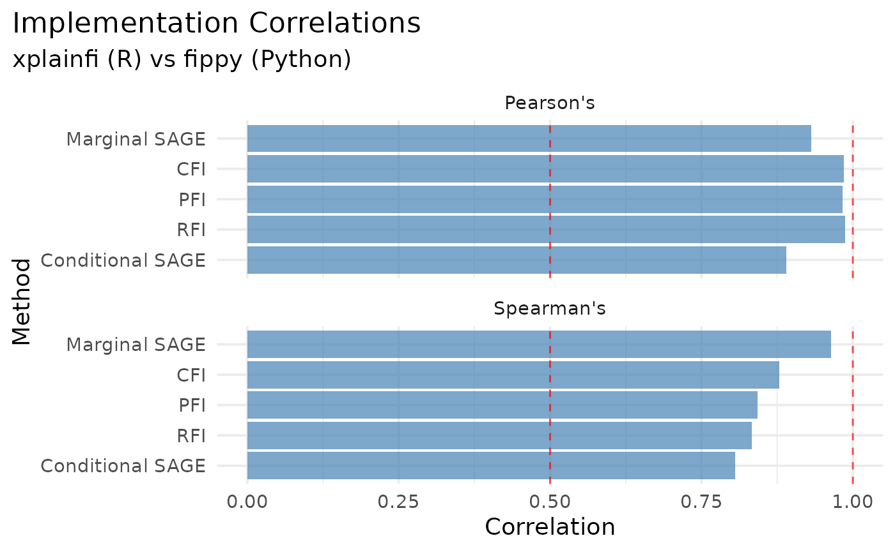

Comparison with fippy (Python Implementation)
Cross-language validation of feature importance methods
Source:vignettes/articles/fippy-comparison.Rmd
fippy-comparison.Rmd
library(data.table)
library(ggplot2)
library(jsonlite)
library(knitr)
library(glue)
library(here)
# Set seed for reproducibility
set.seed(123)Overview
This article compares xplainfi’s feature importance implementations with those from fippy, a Python package implementing similar methods. This comparison serves as a regression test to ensure methodological consistency across language implementations.
The comparison includes: - PFI (Permutation Feature Importance) - CFI (Conditional Feature Importance) - RFI (Relative Feature Importance) - SAGE (Shapley Additive Global Importance) - both marginal and conditional variants
Methodology
Both implementations use: - Dataset: Friedman1 task with 500 observations - Model: Random Forest with 100 trees - Evaluation: Same train/test split (70/30) with identical random seeds - Metrics: Mean Squared Error for importance calculations
Setup and Execution
The comparison uses separate calculation scripts:
# 1. Calculate xplainfi results
cd vignettes/articles/fippy-comparison
Rscript calculate_xplainfi.R
# 2. Calculate fippy results (portable with uv - automatically installs dependencies)
./calculate_fippy.pyBoth scripts generate JSON files with results that are loaded below for comparison.
Load Results
# Check that both result files exist
# Look in the fippy-comparison subdirectory
base_dir <- here::here("vignettes", "articles", "fippy-comparison")
xplainfi_results_path <- file.path(base_dir, "xplainfi_results.json")
fippy_results_path <- file.path(base_dir, "fippy_results.json")
if (!file.exists(xplainfi_results_path)) {
stop("xplainfi_results.json not found. Please run calculate_xplainfi.R first.")
}
if (!file.exists(fippy_results_path)) {
stop("fippy_results.json not found. Please run calculate_fippy.py first.")
}
# Load results from both implementations
xplainfi_results <- fromJSON(xplainfi_results_path)
fippy_results <- fromJSON(fippy_results_path)Model Performance Comparison
performance_comparison <- data.table(
Implementation = c("xplainfi (R)", "fippy (Python)"),
R_squared = c(
round(xplainfi_results$model_performance$r_squared, 4),
round(fippy_results$model_performance$r_squared, 4)
)
)
kable(performance_comparison, caption = "Model Performance Comparison")| Implementation | R_squared |
|---|---|
| xplainfi (R) | 0.7998 |
| fippy (Python) | 0.7840 |
Method Comparisons
compare_method <- function(method_name, xplainfi_result, fippy_result) {
# Both implementations available
method_dt <- data.table(
feature = xplainfi_result$feature,
xplainfi = xplainfi_result$importance,
fippy = fippy_result$importance
)
# Return table and correlation for display
correlation <- cor(method_dt$xplainfi, method_dt$fippy)
correlation_spearman = cor(method_dt$xplainfi, method_dt$fippy, method = "spearman")
list(
method = method_name,
table = kable(method_dt[order(-xplainfi)],
caption = glue("{method_name} Results Comparison"),
digits = 4),
correlation = correlation,
correlation_spearman = correlation_spearman
)
}PFI (Permutation Feature Importance)
pfi_result <- compare_method("PFI", xplainfi_results$PFI, fippy_results$PFI)
pfi_result$table| feature | xplainfi | fippy |
|---|---|---|
| important4 | 13.1946 | 13.6282 |
| important2 | 8.0929 | 7.4817 |
| important1 | 7.2574 | 11.8194 |
| important5 | 2.2180 | 2.6153 |
| important3 | 1.8597 | 0.4184 |
| unimportant4 | 0.1043 | 0.0688 |
| unimportant1 | 0.0271 | 0.0150 |
| unimportant3 | -0.0104 | 0.0495 |
| unimportant2 | -0.0257 | 0.0175 |
| unimportant5 | -0.0277 | 0.0307 |
glue("PFI Correlation: {round(pfi_result$correlation, 3)}")## PFI Correlation: 0.96
pfi_result$correlation## [1] 0.9600275
pfi_result$correlation_spearman## [1] 0.9030303CFI (Conditional Feature Importance)
cfi_result <- compare_method("CFI", xplainfi_results$CFI, fippy_results$CFI)
cfi_result$table| feature | xplainfi | fippy |
|---|---|---|
| important4 | 12.6299 | 16.1744 |
| important2 | 8.3973 | 5.7260 |
| important1 | 7.1543 | 7.3363 |
| important5 | 2.2496 | 3.1382 |
| important3 | 1.7764 | 0.6409 |
| unimportant4 | 0.1018 | 0.1083 |
| unimportant1 | 0.0278 | 0.0655 |
| unimportant3 | 0.0266 | 0.0208 |
| unimportant2 | 0.0100 | 0.0837 |
| unimportant5 | -0.0047 | -0.0996 |
glue("CFI Correlation: {round(cfi_result$correlation, 3)}")## CFI Correlation: 0.96
cfi_result$correlation## [1] 0.9601796
cfi_result$correlation_spearman## [1] 0.9515152RFI (Relative Feature Importance)
rfi_result <- compare_method("RFI", xplainfi_results$RFI, fippy_results$RFI)
rfi_result$table| feature | xplainfi | fippy |
|---|---|---|
| important4 | 12.6370 | 6.7530 |
| important5 | 2.4073 | 4.4817 |
| important3 | 1.7434 | 0.8366 |
| unimportant4 | 0.0753 | -0.2422 |
| unimportant3 | 0.0432 | -0.0883 |
| unimportant2 | 0.0409 | -0.1742 |
| unimportant1 | 0.0328 | 0.2106 |
| important1 | 0.0000 | 0.2241 |
| important2 | 0.0000 | -0.1252 |
| unimportant5 | -0.0632 | -0.0769 |
glue("RFI Correlation: {round(rfi_result$correlation, 3)}")## RFI Correlation: 0.904
rfi_result$correlation## [1] 0.9039289
rfi_result$correlation_spearman## [1] 0.4559292
glue("xplainfi conditioning set: {paste(xplainfi_results$RFI$conditioning_set, collapse = ', ')}")## xplainfi conditioning set: important1, important2
glue("fippy conditioning set: {paste(fippy_results$RFI$conditioning_set, collapse = ', ')}")## fippy conditioning set: important1, important2SAGE Methods
Marginal SAGE
sage_marginal_result <- compare_method("Marginal SAGE", xplainfi_results$SAGE_Marginal, fippy_results$SAGE_Marginal)
sage_marginal_result$table| feature | xplainfi | fippy |
|---|---|---|
| important4 | 7.6519 | 5.7581 |
| important2 | 3.9467 | 5.3063 |
| important1 | 3.5608 | 3.3791 |
| important5 | 1.7490 | 3.0392 |
| important3 | 0.9704 | 0.1057 |
| unimportant4 | 0.0772 | 0.0360 |
| unimportant3 | 0.0184 | -0.0933 |
| unimportant1 | 0.0032 | -0.0463 |
| unimportant5 | -0.0102 | 0.0436 |
| unimportant2 | -0.0335 | -0.1836 |
glue("Marginal SAGE Correlation: {round(sage_marginal_result$correlation, 3)}")## Marginal SAGE Correlation: 0.93
sage_marginal_result$correlation## [1] 0.9303942
sage_marginal_result$correlation_spearman## [1] 0.9151515Conditional SAGE
sage_conditional_result <- compare_method("Conditional SAGE", xplainfi_results$SAGE_Conditional, fippy_results$SAGE_Conditional)
sage_conditional_result$table| feature | xplainfi | fippy |
|---|---|---|
| important4 | 7.6295 | 5.4665 |
| important2 | 3.9900 | 5.0936 |
| important1 | 3.5997 | 4.1092 |
| important5 | 1.7436 | 2.6238 |
| important3 | 0.9507 | -0.3395 |
| unimportant4 | 0.0794 | -0.4944 |
| unimportant3 | 0.0110 | -0.2853 |
| unimportant1 | -0.0034 | -0.2933 |
| unimportant5 | -0.0051 | 0.3990 |
| unimportant2 | -0.0417 | 0.1692 |
glue("Conditional SAGE Correlation: {round(sage_conditional_result$correlation, 3)}")## Conditional SAGE Correlation: 0.92
sage_conditional_result$correlation## [1] 0.9201239
sage_conditional_result$correlation_spearman## [1] 0.6121212Correlation Summary
correlations <- rbindlist(list(
pfi_result[c("method", "correlation", "correlation_spearman")],
cfi_result[c("method", "correlation", "correlation_spearman")],
rfi_result[c("method", "correlation", "correlation_spearman")],
sage_marginal_result[c("method", "correlation", "correlation_spearman")],
sage_conditional_result[c("method", "correlation", "correlation_spearman")]
))
kable(
correlations,
caption = "Pearson and Spearman Correlations between xplainfi and fippy",
col.names = c("Method", "Pearson Corr.", "Spearman Corr.")
)| Method | Pearson Corr. | Spearman Corr. |
|---|---|---|
| PFI | 0.9600275 | 0.9030303 |
| CFI | 0.9601796 | 0.9515152 |
| RFI | 0.9039289 | 0.4559292 |
| Marginal SAGE | 0.9303942 | 0.9151515 |
| Conditional SAGE | 0.9201239 | 0.6121212 |
melt(correlations, id.vars = "method") |>
ggplot(aes(x = reorder(method, value), y = value)) +
facet_wrap(vars(variable), ncol = 1) +
geom_col(fill = "steelblue", alpha = 0.7) +
geom_hline(yintercept = c(0.5, 1), linetype = "dashed", color = "red", alpha = 0.7) +
coord_flip() +
labs(
title = "Implementation Correlations",
subtitle = "xplainfi (R) vs fippy (Python)",
x = "Method",
y = "Pearson Correlation",
caption = "Dashed line at r = 1"
) +
theme_minimal() +
ylim(0, 1)
Technical Notes
fippy Installation and Bug Fix
This comparison uses uv’s script dependency feature for portable execution. The Python script automatically installs fippy from GitHub with a fix for RFI calculations:
# /// script
# requires-python = ">=3.8"
# dependencies = [
# "fippy @ git+https://github.com/jemus42/fippy.git@fix-rfi-to-numpy-bug",
# ]
# ///The fix addresses an
AttributeError: 'float' object has no attribute 'to_numpy'
that occurred when loss functions returned scalar values. No manual
environment setup is required - uv handles all dependencies
automatically.
API Differences
Key differences between implementations:
-
RFI Conditioning: fippy uses
explainer.rfi(conditioning_set, X, y)with conditioning set as first parameter -
SAGE Parameters: fippy uses
n_permutationsrather thann_coalitions -
Sampler Setup: fippy requires explicit
GaussianSampler(X_train)initialization
Methodological Validation
High correlations (r > 0.9) between implementations indicate: - Consistent algorithmic implementations across languages - Proper handling of random seeds and data splits - Valid cross-language validation of methods
Lower correlations may indicate: - Different sampling strategies or implementation details - Stochastic variation in methods like SAGE - Numerical precision differences between R and Python
Conclusion
This comparison provides automated regression testing for xplainfi’s feature importance methods against an independent Python implementation. Regular execution of this comparison helps ensure:
- Methodological consistency across language implementations
- Regression detection when changes are made to xplainfi
- Cross-validation of algorithmic correctness
- Documentation of expected behavior and performance
The comparison framework can be extended to include additional methods as they are implemented in both packages.